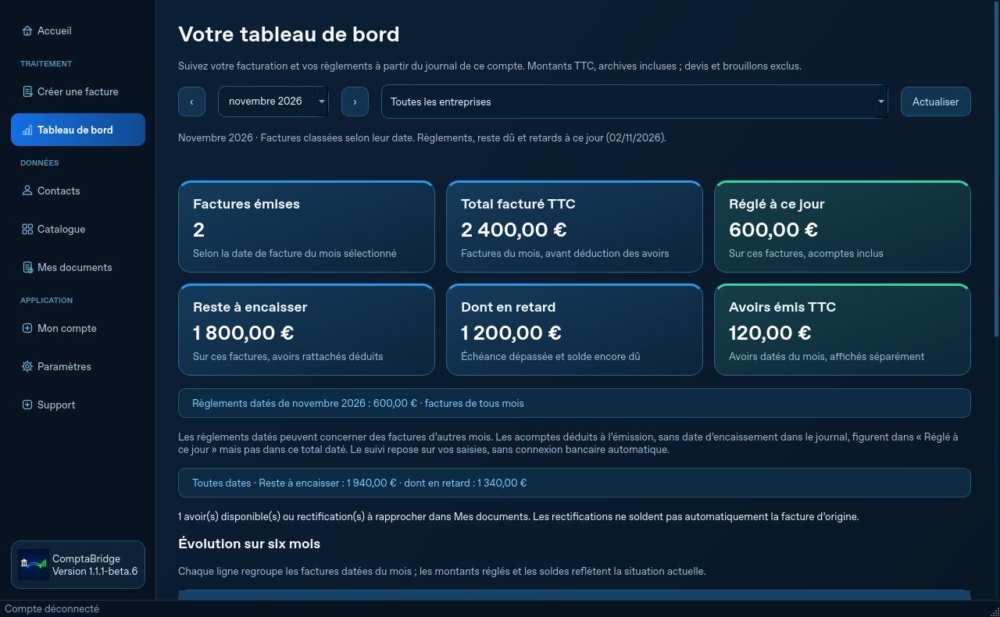

Devis, factures et avoirs.
Personnalisez vos documents avec votre logo, préparez vos lignes et transformez vos devis en factures. Retrouvez votre historique et vos fichiers.
ComptaBridge Facturation · Windows
Créez vos documents, retrouvez vos clients et suivez votre activité dans le même logiciel. Sans quota commercial sur vos clients, devis, factures ou avoirs.
9,99 € HT/mois · Une entreprise émettrice et ses établissements
Windows 11 64 bits testé · Connexion nécessaire au compte, à la licence et à la numérotation partagée.

Capture du logiciel · Données de démonstration
Un aperçu concret
Vos coordonnées, votre client, vos lignes et vos montants : préparez un document à votre image, avec un aperçu et une numérotation partagée.
Illustration du contenu d’une facture, avec des données fictives. La TVA dépend de votre situation et de celle de l’opération.
Le tableau de bord rassemble les factures émises, les règlements déclarés et les retards. Les montants reposent sur vos saisies ; aucune connexion bancaire automatique n’est annoncée.
Agrandir la capture →Capture du logiciel · Données de démonstration
Centralisez les coordonnées et retrouvez les documents de vos clients. Le catalogue rassemble vos produits et prestations pour préparer vos prochaines factures.
Illustration des usages avec des entreprises fictives.
Exemples de parcours · La capture du tableau de bord provient du logiciel ; les autres vues illustrent ses usages.
Tout l’essentiel, au même endroit
Personnalisez vos documents avec votre logo, préparez vos lignes et transformez vos devis en factures. Retrouvez votre historique et vos fichiers.
Gardez les coordonnées utiles à portée de main et retrouvez vos produits ou prestations pour vos prochaines créations.
Déclarez les règlements, même partiels, rattachez les avoirs et repérez les échéances dépassées. Vérifiez vos relances avant leur envoi.
Dupliquez les documents et préparez les prochaines factures avec vos modèles récurrents, en gardant la validation finale.
Générez vos PDF Factur-X et préparez des exports CSV ou votre dossier comptable ZIP. La transmission sur une plateforme agréée reste à effectuer séparément.
Conservez vos sauvegardes chiffrées et activez volontairement la synchronisation du journal. Les PDF et logos ne sont pas envoyés par cette synchronisation.
Un abonnement pour votre entreprise
Une entreprise émettrice et ses établissements, sur les appareils du même utilisateur. Le nombre de clients facturés n’est pas limité commercialement.
La souscription dépend de son ouverture dans votre espace client. Consultez la disponibilité de la version Windows avant de souscrire.
Une entreprise émettrice, plusieurs clients.
Vos clients sont les entreprises que vous facturez. Ils ne nécessitent pas chacun un abonnement. En revanche, une autre entreprise émettrice a besoin de son propre abonnement.
Le service de conversion de documents et le module bancaire OFX sont des offres distinctes.
Avant l’installation
Le logiciel a été testé sur Windows 11 64 bits. La compatibilité des autres versions de Windows reste à vérifier. Aucune version macOS, iPad ou Linux n’est proposée dans cette offre.
Une connexion Internet est nécessaire pour le compte, la licence et la numérotation partagée. Prévoyez aussi une connexion pour les mises à jour et les services synchronisés.
Oui, l’offre permet l’utilisation sur les appareils du même utilisateur. Connectez-vous avec le même compte. Vos documents et sauvegardes restent à organiser sur vos postes ; la synchronisation volontaire du journal ne transfère pas vos PDF et logos.
ComptaBridge permet de préparer vos fichiers Factur-X. La transmission réglementaire sur une plateforme agréée reste à effectuer par vous ou votre partenaire autorisé. La génération d’un Factur-X ne remplace pas cette transmission.